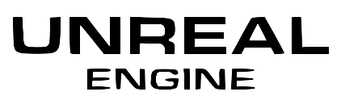

VIZIONARE TRAILER
Konami Group Corporation, cunoscută în mod obișnuit sub numele de Konami, este o companie multinațională japoneză de divertisment și dezvoltator și editor de jocuri video cu sediul central în Chūō, Tokyo. Compania produce și distribuie, de asemenea, cărți de joc, anime, tokusatsu, aparate pachinko, sloturi și arcade. Deține cazinouri în întreaga lume și operează cluburi de sănătate și fitness în toată Japonia.

În anii 1970 a început să producă jocuri arcade. În timpul boom-ului jocurilor arcade din anii 1980, Konami a devenit faimoasă pentru titluri populare precum Frogger și Gradius. La sfârșitul anilor 1980 și în anii 1990, compania a creat unele dintre cele mai influente serii de jocuri video, inclusiv Castlevania, Contra și Metal Gear. Unul dintre cele mai faimoase jocuri ale sale, Metal Gear Solid (1998), conceput de Hideo Kojima, a contribuit la popularizarea gameplay-ului stealth și a povestirii cinematografice în jocurile video. Astăzi, Konami rămâne o companie importantă de divertisment implicată în jocuri video, jocuri de cărți și alte tipuri de divertisment digital.
Konami a publicat numeroase titluri de jocuri video celebre care au devenit clasice în industria jocurilor. Una dintre cele mai cunoscute serii ale sale este Metal Gear, creată de Hideo Kojima, care a introdus un gameplay stealth și o povestire cinematografică. Compania a publicat, de asemenea, seria de acțiune gotică Castlevania și provocatorul shooter de tip run-and-gun Contra. În domeniul arcadelor, Konami a lansat jocuri populare precum Frogger și Gradius, care au contribuit la faima companiei în anii 1980. Konami a publicat, de asemenea, jocuri sportive precum Pro Evolution Soccer și titluri de jocuri de cărți bazate pe Yu-Gi-Oh!. Aceste titluri au făcut din Konami unul dintre cei mai influenți editori din istoria jocurilor video.
Toate linkurile de mai jos nu fac parte din lucrarea de atestat și sunt linkurile de la siteurile oficiale
Konami Group Corporation este o conglomerație internațională Japoneză de divertisment și jocuri video. fondată în Martie 21, 1969, de Kagemasa Kōzuki. Situată în Tokyo, Jaaponia, compania este recunoscută global ca un mare developer de jocuri video, dar și în amuzament, jocuri de casino, jocuri sportive și fitness.
